Post QoL Upgrade Mk2 Hatch Killing Room
Post QoL Upgrade Mk2 Hatch Killing Room
QoL Upgrade Mk2 release on Feb 2019 disabled the use of doors as a trap for Hatches to fall down to a room. They can now walk along an opened, door, which has caused havoc on my semi-automated hatch farm :/
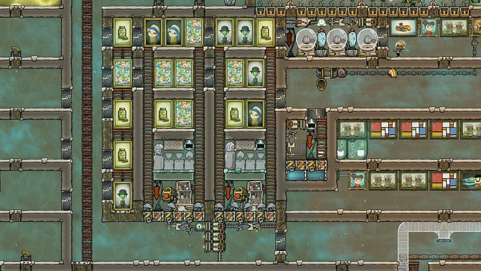
I have since moved most everything to manual delivery by dupes, but the most complicated deal was the “Killing Room”, where excess Hatches go to die.
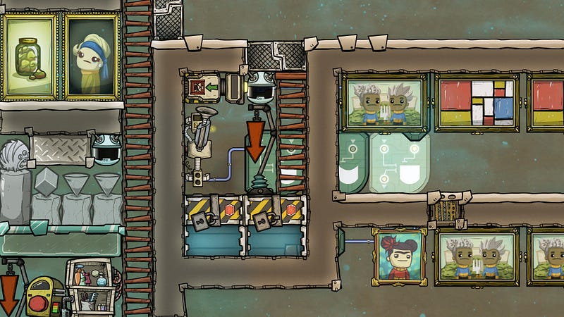
Here’s my setup. Dupes will bring in excess Hatches to be killed by drowning them. As you can see from the picture above, it’s basically a room with trapped water.
The critter sensor is triggered when the Hatch is brought in, and through various contortions the water level rises and the Hatch is drowned.
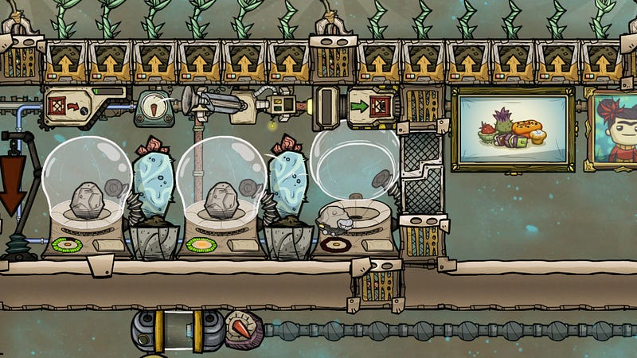
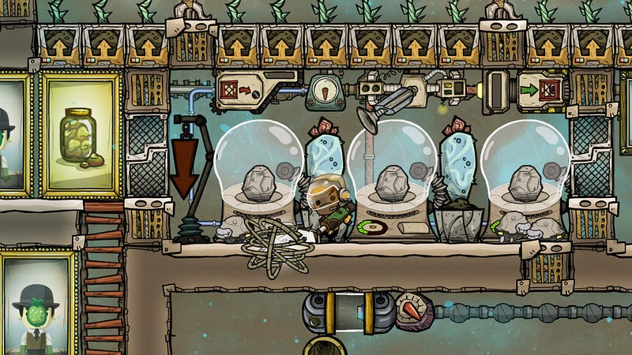
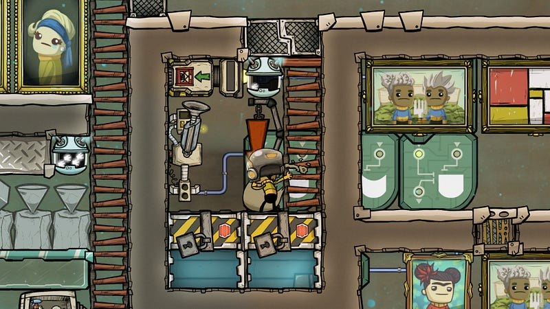
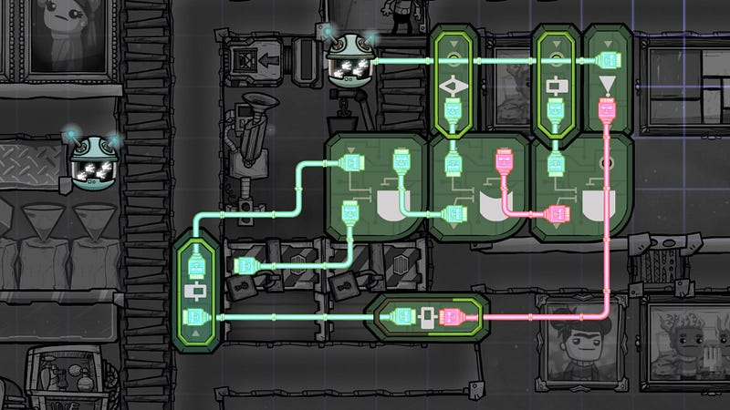
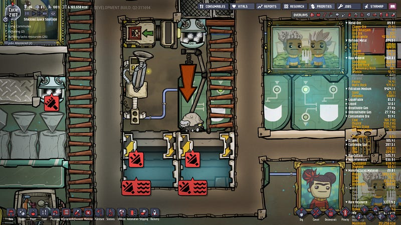
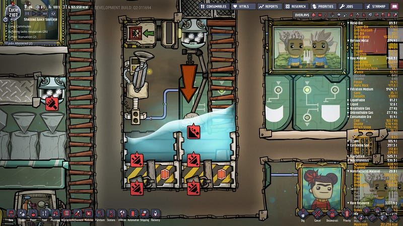
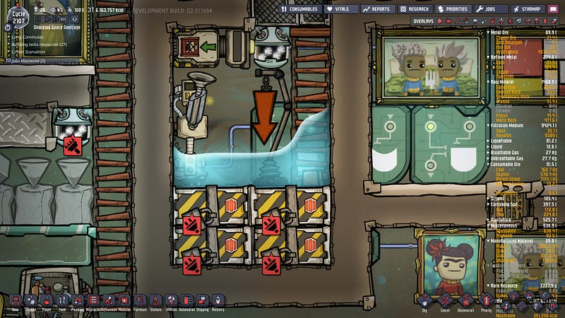
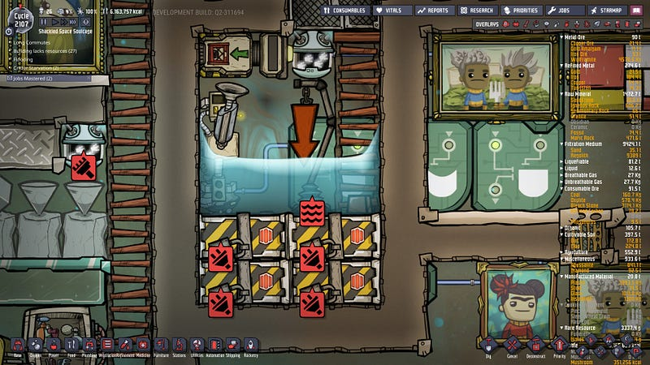
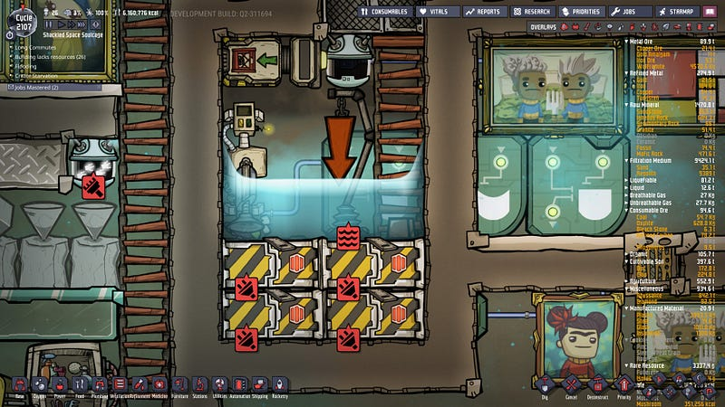
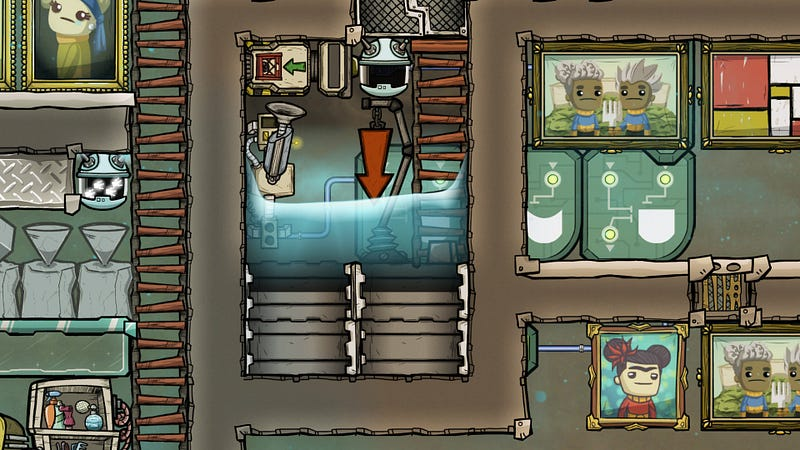
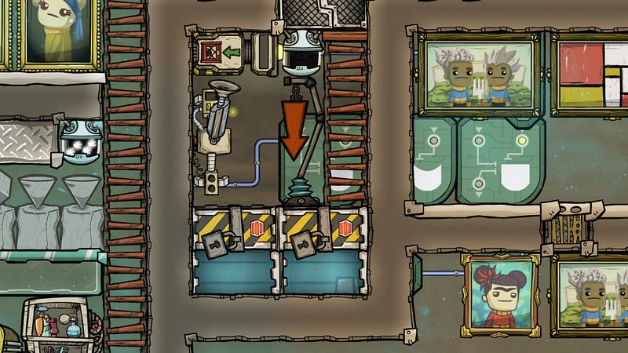
The tricky bit is that, when the Critter Drop-off gets flooded, it ceases to function. This is why we need to keep the water away when we’re waiting for the Hatches to be brought in.
In the same vein, when we move the water away, we also need to make sure that the doors don’t all close at the same time, or otherwise when the water has no where to escape it simply vanishes.
This means that we basically need 3 states for doors:
- All closed, the water is above the 4 doors.
- All opened, the water is in the bottom 2 doors.
- Half closed, the water is in the top 2 doors
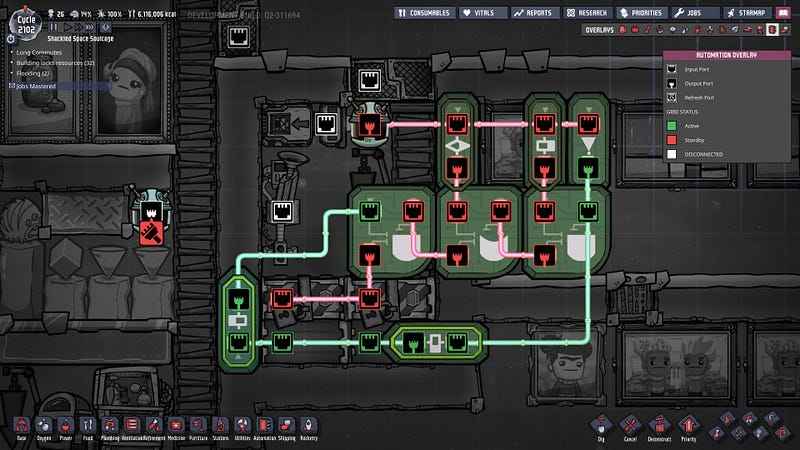
The logic looks complicated, but it’s basically 1 And/Or logic gate per state. The right most one is for opening all doors. The middle one is to have the top doors open and lower doors closed. The left most one is to have the top doors closed, lower doors opened.